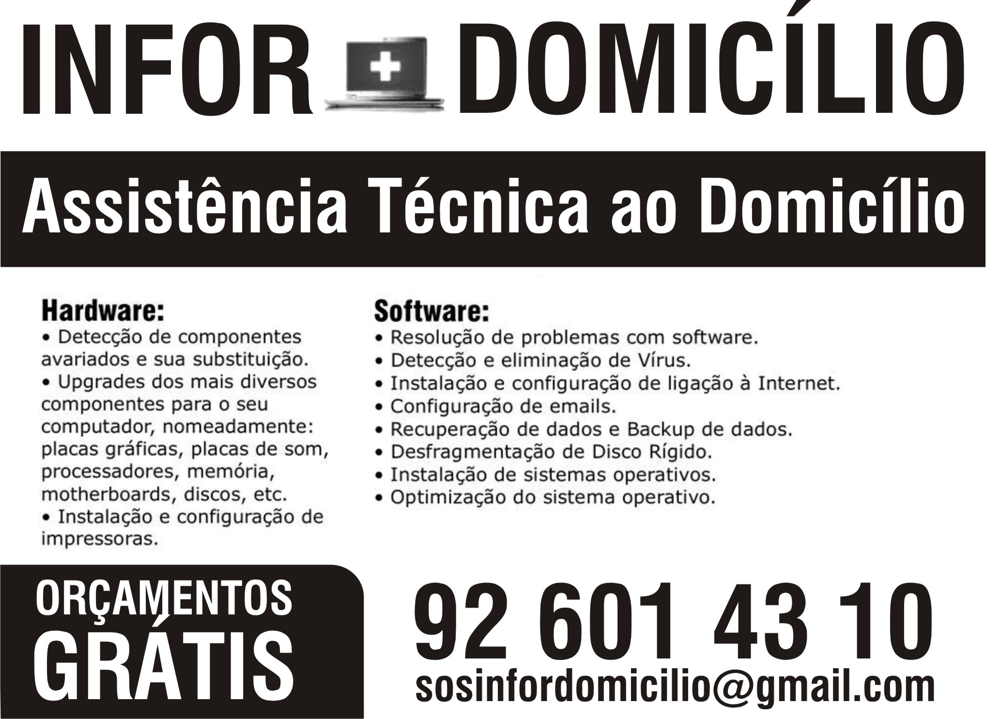

Equipment and systems
Diagnostics, maintenance, repairs and upgrades for laptops and desktops. Setup of systems, applications and peripherals, with assessment of compatibility and customer needs.

More than 25 years of experience have taught us that good support starts with understanding the customer. We listen to the symptoms, assess the device and explain the available options, so decisions are informed and no unapproved work is carried out. We value maintenance, component compatibility and solutions proportionate to actual needs rather than unnecessary replacements.
Diagnostics, maintenance, repairs and upgrades for laptops and desktops. Setup of systems, applications and peripherals, with assessment of compatibility and customer needs.
Network and Wi-Fi support, file migration and backup organisation. Each solution is assessed according to the equipment and its use.
We explain options and service terms before proceeding. Data access and remote sessions are agreed with the customer.
Biochip - Infordomicilio provides on-site assistance by appointment and remote support when appropriate. The business operates as a sole trader, with no shop open to the public.
Request assistanceA record of our promotional materials, part of our history of IT support for customers.
